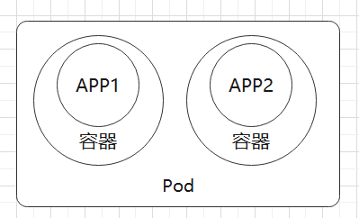
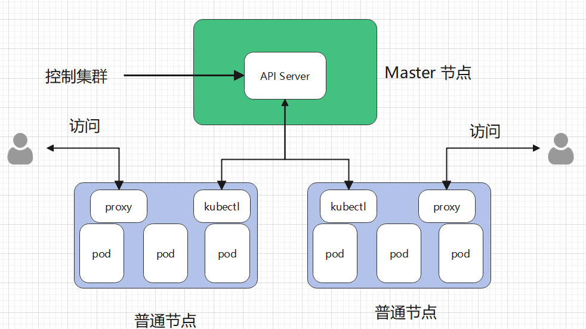

1.4 容器与 Pod
现在 Docker 的流行程度越来越高，越来越多的公司使用 Docker 打包和部署项目。但是也有很多公司只是追求新技术，将以前的单体应用直接打包为镜像，代码、配置方式等各方面保持不变，使用 Docker 后，并没有带来多大的便利，反而使得配置、启动过程变得更加繁杂，更难调试。
本章将讨论容器与 Pod 的关系，了解如何更好地将应用容器化。
什么是容器化应用
containerized applications 指容器化的应用，我们常常说使用镜像打包应用程序，使用 Docker 发布、部署应用程序，那么当你的应用成功在 Docker 上运行时，称这个应用是 containerized applications。
定义：
[Success] 定义
Containerized applications are bundled with their required libraries, binaries, and configuration files into a container.
容器化的应用程序与它们所需的库、二进制文件和配置文件绑定到一个容器中。
通常，容器都包含一个应用程序，以及正确执行二进制程序所需的依赖库、文件等，例如 Linux 文件系统+应用程序组成一个简单的容器。通过将容器限制为单个进程，问题诊断和更新应用程序都变得更加容易。与 VM(虚拟机)不同，容器不包含底层操作系统，因此容器被认为是轻量级的。Kubernentes 容器属于开发领域。
容器在操作系统之上，提供了 CPU、内存、网络、存储等资源的虚拟化，为应用在不同服务器里提供了一致的运行时环境。开发者可以通过容器创建一个可预测的环境，能够保证在开发、调试、生产时的环境都是一致的，减少开发团队和运维团队可以减少调试和诊断问题时，因环境差异带来的麻烦。同时，应用运行在一个沙盒中，对应用和系统进行了隔离，提高了安全性，还能限制应用程序使用的计算资源。
当然，并不是说能够将一个应用程序打包到容器中运行，就可以鼓吹产品；并不是每个应用程序都是容器化的优秀对象，例如在 DDD 设计中被称为大泥球的应用程序，具有设计复杂、依赖程度高、程序不稳定等确定，这种难以迁移、难以配置的应用程序明显是失败的产品。
在多年经验中，许多开发者对容器化技术进行了总结，这些强有力的经验、理论形成十二个云计算应用程序因素指导原则：
1. Codebase: One codebase tracked in revision control, many deploys
代码库： 一个代码库可以在版本控制和多份部署中被跟踪。一般使用 github 等对代码进行管理。
2. Dependencies: Explicitly declare and isolate dependencies
依赖项： 显式声明和隔离依赖项。
3. Config: Store config in the environment
配置：在环境中存储配置。
4. Backing services: Treat backing services as attached resources
支持服务：将支持服务视为附加资源(可拓展，而不是做成大泥球)。
5. Build, release, run: Strictly separate build and run stages
构建、发布、运行： 严格区分构建和运行阶段(连 Debug、Release 都没有区分的产品是真的垃圾)。
6. Processes: Execute the app as one or more stateless processes
过程：应用程序作为一个或多个无状态过程执行。
7. Port binding: Export services via port binding
端口绑定：可通过端口绑定服务对外提供服务。
8. Concurrency: Scale out via the process model
并发性：通过 process 模型进行扩展。
9. Disposability: Maximize robustness with fast startup and graceful shutdown
可处理性： 快速启动和完美关机，最大限度地增强健壮性。
10. Dev/prod parity: Keep development, staging, and production as similar as possible
开发/生产一致：尽可能保持开发中、演示时和生产时的相似性。
11. Logs: Treat logs as event streams
Logs：将日志视为事件流。
12. Admin processes: Run admin/management tasks as one-off processes
管理流程：将管理/管理任务作为一次性流程运行。
上述内容可能有笔者翻译不到位的地方，读者可阅读原文了解：https://12factor.net/
容器位于开发人员技能列表之中，开发人员需要掌握如何容器化应用。
另外，在一个产品中，好的容器化规范或方法，具有以下特点：
- 使用声明式的格式进行设置自动化，以最大限度地减少新开发人员加入项目的时间和成本；
- 与底层操作系统之间有一个干净的契约(资源隔离、统一接口)，在执行环境之间提供最大的可移植性；
- 适合部署在现代云平台上，无需服务器和系统管理；
- 最大限度地减少开发和生产之间的差异，实现持续部署以实现最大敏捷性；
- 并且可以在不对工具、架构或开发实践进行重大更改的情况下进行扩展。
在制作云原生应用的过程中，可以参考云计算应用程序因素指导原则，设计更加优秀的产品。
Pod
最简单的说法就是将多个容器打包起来一起运行，这个整体就是 Pod。
[Info] 提示
在上一章的 Docker 网络中，介绍了 container 网络模式，Pod 正是通过这种网络模式，让 Pod 中的容器共享网络，也就是说，Pod 中的容器，网络是互通的，容器之间不能使用相同的端口。
Pod 是 Kubernetes 集群中最小的执行单位。在 Kubernetes 中，容器不直接在集群节点上运行，而是将一个或多个容器封装在一个 Pod 中，接着将 Pod 调度到节点上运行，这些容器会一起被运行、停止，它们是一个整体。
Pod 中的所有容器共享相同的资源和本地网络，从而简化了 Pod 中应用程序之间的通讯。在 Pod 中，所有容器中的进程共享网络，可以通过 127.0.0.1、localhost 相互进行访问。详见 3.1 章 中 "Pod 共享网络和存储" 一节。
一个简单的 Pod，其结构如下：

[Info] 提示
Pod 启动时会启动一个容器，K8S 给这个容器分配虚拟 IP，接着，其他容器使用 container 网络模式，连接到这个容器中，此时有容器共享网络。
随着 Pod 负载的增加，Kubernetes 可以自动复制 Pod 以达到预期的可拓展性(部署更多的 Pod 提供相同的服务，负载均衡)。因此，设计一个尽可能精简的 Pod 是很重要的，降低因复制扩容、减少收缩过程中带来的资源损失。
前面提到，容器应当是无状态的，所以拓展 Pod 时，每个实例都提供了一模一样的服务，这些 Pod 分配到不同的节点上，可以利用更多的 CPU、内存资源。

在第三章中，我们会更加详细地学习 Pod，这里就不再赘述。
容器与 Pod 的区别
容器包含执行特定流程或函数所需的代码(编译后的二进制可执行程序)。在 Kubernetes 之前，可以直接在物理或虚拟服务器上运行容器，但是缺乏 Kubernetes 集群所提供的可伸缩性和灵活性。
Pod 为容器提供了一种抽象，可以将一个或多个应用程序包装到一个 Pod 中，而 Pod 是 Kubernetes 集群中最小的执行单元。例如 Pod 可以包含初始化容器，这些容器为其它应用提供了准备环境，然后在应用程序开始执行前终结。Pod 是集群中复制的最小单位，Pod 中的容器作为整体被扩展或缩小。

例如对应前后端分离的项目，可能不需要把前端文件和后端程序放在一起，而是分别放在两个容器中。然后通过 Pod，将这两个容器作为一组服务打包在一起。
节点
Pod 是 Kubernetes 中最小的执行单元，而 Node 是 Kubernetes 中最小的计算硬件单元，节点可以是物理的本地服务器，也可以是虚拟机，节点即使宿主服务器，可以运行 Docker 的机器。
与容器一样，Node 提供了一个抽象层。多个 Node 一起工作形成了 Kubernetes 集群，它可以根据需求的变化自动分配工作负载，增加或减少在节点上的 Pod 数量。如果 A 节点和 B 节点的硬件资源是一致的，那么 A 、B 两个节点是等价的，如果 A 节点失败，它将自动从集群中移除，由 B 节点接管，不会出现问题。
每个节点都运行着一个名为 kubelet 的组件，它是节点的主要组件，Kubernetes 与集群控制平面组件(API Server)通信，所有对节点有影响的操作都会通过 kubectl 控制此节点。kubelet 也是 master 节点跟 worker 节点之间直接通讯的唯一组件。

kubelet 的一些功能有：
- 在节点上创建、更新、删除容器；
- 参与调度 Pod；
- 为容器创建和挂载卷；
- 使用命令查看 Pod 、容器，例如
exec、log等时，需要通过 kubelet；
例如，集群有 A、B 两个节点，Pod 部署在哪里了，这不是用户关心的事情，用户在想看到容器的日志，可以随便找集群中的一台主机，执行命令，Kubernetes 会自动寻找容器所在的节点，然后kubectl 取得需要的内容。
另外节点上还有 proxy，主要是为 Pod 提供代理服务，外界可通过此代理，使用节点的 IP 访问 Pod 中的容器。
